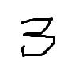

1. restructured text の練習¶
このページ内の目次 一覧
1.2. 引用¶
これは実は、定義リストになってしまう。:
こんにちは改行
(indent)こんにちは改行引用a
(indent)こんにちは改行引用b
(indent)こんにちは改行引用c
(indent)こんにちは改行引用b
引用をするなら、行を開けてからインデント。
こんにちは改行
(indent)こんにちは改行引用a (indent)こんにちは改行引用b
(indent)こんにちは改行引用c (indent)こんにちは改行引用d
(indent)こんにちは改行引用c (indent)こんにちは改行引用e(indent)こんにちは改行引用f (indent)こんにちは改行引用g
(indent)こんにちは改行引用h (indent)こんにちは改行引用i
1.2.1. 改行とインデントをそのまま表示¶
1.3. 脚注¶
脚注を作成するためのマークアップは、[#]_ で自動採番 [1] することができます。 [2]
もちろん手動採番 [3] することも可能 [5] ですが、ちょっとややこしくなりそうですね。
脚注を番号ではなくラベル [6] で作ることもできます。大きめの文書ならこっちが良いですね。
1.4. コードブロック¶
コードブロック:
ほげ::
コードブロック
ぼへ
code-block ディレクティブ:
ハイライトバリエーション : http://pygments.org/docs/lexers/
1 2 3 | $ cd /etc
$ sudo yum update
$ sudo systemctl start httpd
|
1 2 3 4 5 | public class Main {
public staic void main(String[] args) {
System.out.println("Hello, Java");
}
}
|
1 2 3 4 5 6 | #include <stdio.h>
int main(int argc, char *argv[]) {
printf("Hello, C\n");
return 0;
}
|
1 2 3 4 5 | def some_function():
interesting = False
print 'This line is highlighted.'
print 'This one is not...'
print '...but this one is.'
|
1 2 3 | <?php
header('Content-Type: text/html');
phpinfo();
|
1 2 3 4 5 6 7 8 | CREATE DATABASE testdb1;
CREATE TABLE tb1 (
id integer primary key auto_increment,
name varchar(255) not null,
age integer
);
INSERT INTO tb1 (name, age) VALUES ('jon', 10), ('job', 20), ('bob', 30);
SELECT id, name, age FROM tb1 WHERE age > 10 ORDER BY id DESC;
|
1.4.1. コロンのバリエーション¶
普通にコロン:
code block1
コロン1こだけ。:
code block2
ソースコード上はいきなりコロンはできない。(Unexpected indentation.):
ほげ
::
code block3
段落最初がいきなりコロン（これがリテラルブロックの標準）
code block 4
コロンの前に空白
code block 5
段落最初が空白 + コロン（これがベストか。）
code block 6
もしかしてインデント要らなくね？
もしかしてインデント要らなくね？
::
code block 7
→駄目だった・・・。(Literal block expected; none found.)
1.5. コメントアウト¶
行単位:
.. comment-outed1
.. comment-outed2
.. comment-outed3
複数行ならインデントしてまとめられる:
..
blocked comment-outed1
blocked comment-outed2
blocked comment-outed3
1.6. リスト¶
1.6.1. 番号無し¶
item1
item1-1 foo bar baz
item1-1-1
code block AAAA code block BBB code block BBB code block BBB
item1-1-1-1 FOO
BAR
BAZ
item1-1-1-1-1
改行とインデントをそのまま表示しますん。- item1-1-1-1-1-1
item1-2
def some_function(): interesting = False print 'This line is highlighted.' print 'This one is not...' print '...but this one is.'
item1-3
item 2
複数種類のbullet listsを連続させることはできない。:
* item1
+ item2
- item3
→ WARNING: Bullet list ends without a blank line; unexpected unindent.
- item 3a
- item3a-1
- item3a-1-1
- item3a-1
- item 3b
- item 4a ネストで、別の種類のbullet listsを混ぜる事はできる。
- item 4b
1.6.2. 番号あり。¶
ordered-1
- ordered-1a
- ordered-1aa
- ordered-1aaa
- ordered-1ab
- ordered-1ac
- ordered-1b
- ordered-1c
ordered-2
ordered-3
OK:
ordered-1
- ordered-1a
- ordered-1aa
- ordered-1aaa
- ordered-1ab
- ordered-1ac
- ordered-1b
- ordered-1c
ordered-2
ordered-3
NG:
ordered-1
1-1. ordered-1a
- ordered-1aa
- ordered-1aaa
- ordered-1ab
- ordered-1ac
1-2. ordered-1b 1-3. ordered-1c
1. ordered-2 1. ordered-3
1.6.3. 番号あり/なし混在¶
item1
- item1a
- item1b
item1b-1
item1b-2
item1b-2a
item1b-2a
code-blockAAA code-blockBBB code-blockCCC
item1b-2a
item1b-3
- item1b
item2
1.6.4. 定義リスト¶
- term1
description description
description
def some_function(): interesting = False print 'This line is highlighted.' print 'This one is not...' print '...but this one is.'
description
- term2
description description
- item1
- item2
- item2a
- item2b
- item3
description
codeblock AAA codeblock BBB codeblock CCC
description
1.7. italic/bold/literal¶
強調(italic)/強い強調(bold)/リテラル表記:
* *強調(italic)*
* **強い強調(bold)**
* ``リテラル表記``
→
- 強調(italic)
- 強い強調(bold)
リテラル表記
1.8. reSTマークアップのエスケープ¶
* あああ *, ** ううう **, `えええ`, ``おおお``
.. かかか :ABCDEF:`abcdef`
= aaa
# bbb
- ccc
+ ddd
1.9. テーブル¶
1.9.1. 簡単な書き方¶
| col1 | col2 | col3 |
|---|---|---|
| val1 | val2 | val3 |
| val1 | val2 | val3 |
| val1 | val2 | val3 |
| val1 | val2 | val3 |
| val1 | val2 | val3 |
| Inputs | Output | |
|---|---|---|
| A | B | A or B |
| False | False | False |
| True | False | True |
| False | True | True |
| True | True | True |
1.9.2. 凝った書き方¶
| Header row, column 1 (header rows optional) | Header 2 | Header 3 | Header 4 |
|---|---|---|---|
| body row 1, column 1 | column 2 | column 3 | column 4 |
| body row 2 | Cells may span columns. | ||
| body row 3 | Cells may span rows. |
|
|
| body row 4 | |||
1.10. URLリンクとラベルと参照と画像¶
1.10.1. URLリンクの書き方¶
コード:
* http://sphinx-doc.org/
* `sphinx-doc <http://sphinx-doc.org>`_
* Sphinx-doc_
* `example.com site`_
(...)
.. _Sphinx-user: http://docs.sphinx-users.jp/
.. _example.com site: http://www.example.com/
→
1.10.2. 同じページ内のラベル参照¶
コード:
.. _`label sample`:
ページ内リンクのテスト見出し
##############################
hello
ここで :ref:`label sample` を参照。
ページ先頭の方にある :ref:`引用ブロックのサンプル<label - quote block>` を参照。
→
1.10.3. 違うページへの参照¶
reST:
* グローバルに使える参照を使用
* :ref:`ex-role-dirs_admonitions-dir` へジャンプ。
* :ref:`label-citation-included` へジャンプ
* グローバルに使える参照を使用(リンク文字列カスタマイズ)
* :ref:`別ページの特定ラベル<ex-role-dirs_admonitions-dir>` へジャンプ。
* :ref:`別ページの特定のラベル2 <label-citation-divided>` へジャンプ
* ``:doc:`` ロールを使用
* :doc:`ex-role-dirs` へジャンプ
* ``:doc:`` ロールを使用(リンク文字列カスタマイズ)
* :doc:`別ページ<ex-role-dirs>` へジャンプ
→
- グローバルに使える参照を使用
- Admonitions ディレティブ へジャンプ。
- 引用書籍一覧(ページinclude) へジャンプ
- グローバルに使える参照を使用(リンク文字列カスタマイズ)
- 別ページの特定ラベル へジャンプ。
- 別ページの特定のラベル2 へジャンプ
:doc:ロールを使用- ロールやディレクティブの練習 へジャンプ
:doc:ロールを使用(リンク文字列カスタマイズ)- 別ページ へジャンプ
1.10.4. 画像¶
画像はソースファイルからの相対パスか、トップのソースディレクトリからの絶対パスで指定する。
sphinx-quickstartで作られた source/_static ディレクトリに置く必要はない。


図番号 - 1.10.1 This is the caption of the figure (a simple paragraph).
The legend consists of all elements after the caption. In this case, the legend consists of this paragraph and the following table:
| Images | |
|---|---|
|  | Number 3. |
| Number 4. | |
| Number 5. |
1.11. 置換機能による共通化・省力化¶
インラインの置換:
* |ssl|
* |tls|
* |rest|
* |http|
* |https|
* |chkconfig|
* |systemctl|
* |hosts|
* |crontab|
* |passwd|
* |kbd_ctrl-c|
* |kbd_ctrl-v|
* |kbd_esc|
* |kbd_meta|
* |man_ls|
→
- SSL
- TLS
- reStructuredText
- HTTP
- HTTPS
- /usr/sbin/chkconfig
- /usr/bin/systemctl
/etc/hosts/etc/crontab/etc/passwdCtrl-CCtrl-VESCMeta- ls(1)
|release| |
0.1 |
|version| |
0.1 |
|today| |
2016-09-17 21:28:17 |
| image one | |
| image two | |
| image three |
1.12. フィールド表記¶
| Date: | 2016-09-17 21:28:17 |
|---|---|
| Version: | 0.1 |
| Authors: |
|
| インデント入り: | この文章は、途中で インデントされてます。 どう表示されるかな？ |
1.14. 引用書籍一覧(同一ページ内)¶
| [CIT01] | Book1 Title. foo bar |
| [CIT02] | Book2 Title. foo bar |
| [CIT03] | Book3 Title. foo bar |